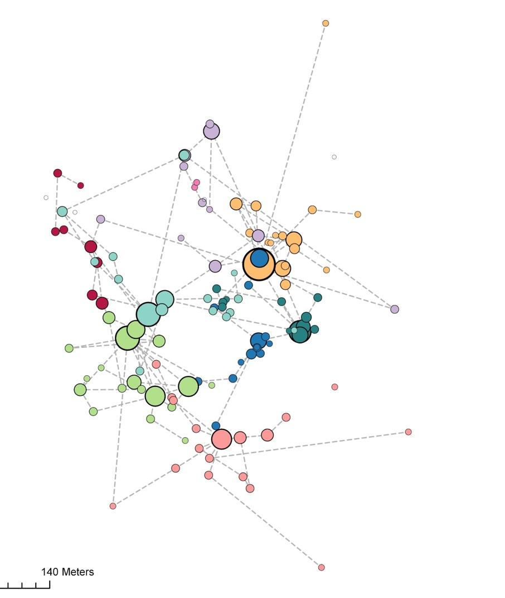

Eulemur rubriventer Juvenile

Rotra canopy

| Individual plant-animal Interaction Networks | |
|---|---|
| For this project I am using direct observations of lemur foraging and movement to examine the spatial structure of interactions between individual plants and their frugivore specialists, and its influence on patterns of seed dispersal |  |